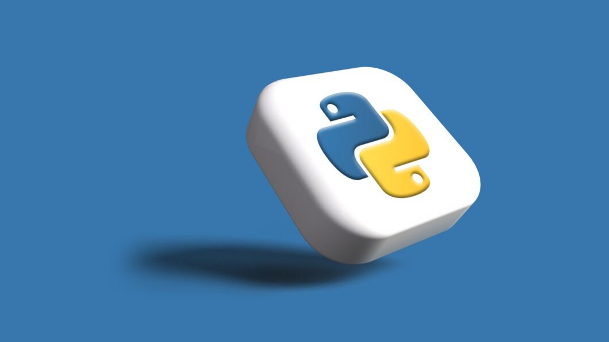

- Введение
- Обзор
- Источники
- Интерактив
Языки программирования
Языки программирования - это наборы инструкций и правил, которые используются для написания программ и создания программного обеспечения. Они являются основой для разработки приложений, веб-сайтов, игр, операционных систем и других технологических решений.
Языки программирования возникли из необходимости управлять и взаимодействовать с компьютерами. Первые языки, такие как машинный код, были прямыми инструкциями, понятными компьютерам, но неудобными для программистов. С развитием компьютерных наук появились высокоуровневые языки программирования (например, Fortran, COBOL, Lisp). Они обеспечили более удобный и абстрактный способ написания программ, позволяя программистам думать на более высоком уровне абстракции.
Языки программирования играют критическую роль в развитии информационных технологий и становятся основой для новых технологий и инноваций в цифровой эпохе.
1. Python
- Множество библиотек и фреймворков: На плечах Python лежит обширное сообщество разработчиков, предлагающее богатый выбор библиотек для работы с данными, веб-разработки, машинного обучения и научных вычислений.
- Простота и читаемость кода: Python славится своей легкостью изучения и читаемостью, что делает его отличным выбором для начинающих программистов.
2. JavaScript
- Фронтенд и бэкенд разработка: JavaScript активно используется на фронтенде для создания интерактивных пользовательских интерфейсов и на бэкенде с помощью платформы Node.js.
- Асинхронное программирование: Обработка асинхронных операций через колбэки, промисы и async/await делает его мощным инструментом для обработки событий.
3. Java
- Портативность и надежность: Код, написанный на Java, может запускаться на различных платформах благодаря виртуальной машине Java (JVM).
- Масштабируемость и многозадачность: Поддержка многопоточности делает Java подходящим выбором для крупных приложений с высокими требованиями к производительности.
4. C++
- Управление ресурсами: C++ предоставляет большой контроль над памятью и ресурсами, что полезно при разработке высокопроизводительных приложений.
- С++ в игровой индустрии: Широко используется в разработке видеоигр, где высокая производительность играет важную роль.
5. C#
- Платформа .NET: C# - ключевой язык для разработки под платформу .NET, предоставляющей широкий спектр инструментов для создания различных приложений, включая приложения для Windows, веб-приложения и игры.
6. Kotlin:
- Язык для Android разработки: Kotlin - официально поддерживаемый язык для разработки Android-приложений Google. Он считается более конкретным и безопасным по сравнению с Java.
Обсудив важность языков программирования, предлагаем вам ознакомитья с материалами, связанными с изучением этих "инструментов" разработчика.
University of Michigan
This Specialization builds on the success of the Python for Everybody course and will introduce fundamental programming concepts including data structures, networked application program interfaces, and databases, using the Python programming language. In the Capstone Project, you’ll use the technologies learned throughout the Specialization to design and create your own applications for data retrieval, processing, and visualization.
ОзнакомитьсяDuke University

Learn to code in Java and improve your programming and problem-solving skills. You will learn to design algorithms as well as develop and debug programs. Using custom open-source classes, you will write programs that access and transform images, websites, and other types of data. At the end of the course you will build a program that determines the popularity of different baby names in the US over time by analyzing comma separated value (CSV) files.
ОзнакомитьсяThe Cherno

This playlist is for non-experienced students who want to program in C++. The examples and exercises dont require any basic understanding of algorithms or object-oriented software. You can watch these series with any level of programming you have. Dont forget to do all the homework in this playlist.
Ознакомиться